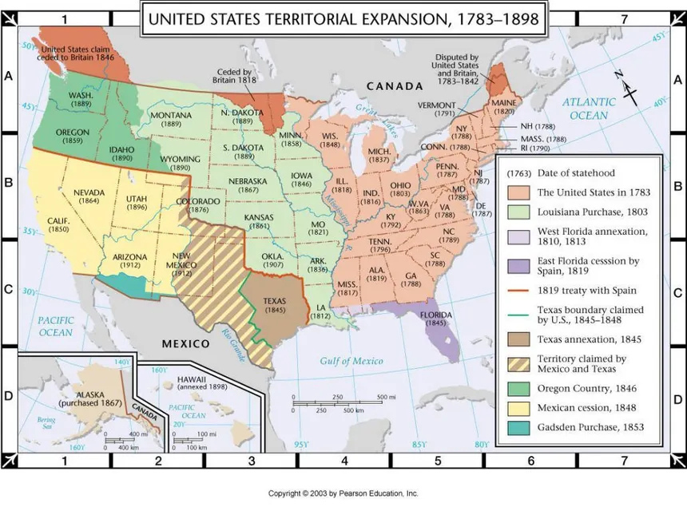

Manifest Destiny
This page explores the idea and history of Manifest Destiny, the 1800s belief that America was meant to expand across the continent and spread democracy and capitalism from coast to coast.
Definition and Core Beliefs
Manifest Destiny was a belief from the 1800s that said the United States expanding across America was right and bound to happen. People who supported this idea believed that the United States was meant to expand its control and spread democracy and capitalism across all of North America.
This belief said it was America's duty to settle the continent, take over land, and grow stronger. It mixed nation-building with religion, saying that America had a God-given mission to settle and civilize the West. This idea gave reasons for aggressive land-grabbing during the 1800s.
Origins and Early Ideas
The term "Manifest Destiny" became popular in 1845, but the basic idea started much earlier. It began with the first European immigrants, especially English Protestants or Puritans who settled in America.
Puritan leader John Winthrop gave a sermon in 1630 saying their religious settlement should be an example to others. He said they would be "as a city upon a hill" and repeated Bible verses about the need to expand and grow, saying "Be fruitful, and multiply, and replenish the earth, and subdue it."
Manifest Destiny also includes the idea of American exceptionalism. This is the belief that the U.S. has a special place among countries and is naturally different from others. The actual phrase "Manifest Destiny" was created by American newspaper writer John Louis O'Sullivan in 1845. O'Sullivan first used the phrase in articles he wrote in July and December that year to support adding Texas to the U.S. and taking over the Oregon territory. He wrote that it was "our manifest destiny to overspread and to possess the whole of the continent which Providence has given us for the development of the great experiment of liberty and federated self-government entrusted to us."
Territorial Expansion
From 1830 to 1860, the United States strongly pushed to expand, often willing to use force to get new territories. This expansionism (the policy of making a country bigger by taking more land) was closely tied to Manifest Destiny.
The United States got huge amounts of new land through several major purchases and wars:
- Louisiana Purchase (1803): President Thomas Jefferson started westward expansion by buying 828,000 square miles of land from France for $15 million. This nearly doubled or tripled the size of the young country. Meriwether Lewis and William Clark were given the job of exploring and mapping this new land.
- Texas Annexation (1845): Texas was added to the U.S. even though some people were against it because they feared war with Mexico and disagreed about expanding slavery.
- Oregon Territory (1846): The U.S. and Britain both claimed the Oregon territory, which stretched from the Pacific Coast to the Rocky Mountains. They agreed to split the region along the 49th parallel, avoiding a major problem.
- Mexican-American War (1846–1848): Driven by the spirit of Manifest Destiny, the U.S. started its first offensive war by invading Mexico. The Treaty of Guadalupe Hidalgo (1848) that ended the war added 525,000 square miles of territory, including all or parts of California, Arizona, New Mexico, Nevada, Utah, and Wyoming.
- Gadsden Purchase (1853): This purchase completed the last land acquisition in the continental U.S., setting the southern borders of New Mexico and Arizona. It was mainly done to allow for building a southern railroad across the country.
Justification and Consequences
Manifest Destiny gave reasons for aggressive land expansion and forcing Native Americans off their land. This idea said it was okay to conquer land and push out the "uncivilized," non-Christian peoples who, Americans believed, weren't using the land properly.
The Indian Removal Act of 1830 used treaties to move Native Americans from their homes. When tribes refused to leave, soldiers were ordered to force them out. This resulted in death marches and huge loss of life from violence and disease. This forced removal of Native Americans remains one of the darkest parts of Manifest Destiny.
Major Consequences
- Forced removal and relocation of Native American tribes
- Huge loss of life from violence, disease, and death marches
- Bigger debate over slavery in new territories
- Growing conflict between North and South
- Events like "Bleeding Kansas" that hinted at the Civil War to come
- Fast territorial expansion that doubled the size of the United States
The fast growth of territory during the first half of the 1800s also increased the debate over whether new states would allow slavery or be free states. This made the conflict between North and South worse and eventually led to the Civil War. Adding these new Western states made the tension between the North and the South even stronger. For example, the Kansas-Nebraska Act (1854) introduced "popular sovereignty" to let people in those territories decide the slavery issue themselves. This led to violent fights known as "Bleeding Kansas," an important event that hinted at the Civil War to come.
Cultural Representations and Legacy
Artists helped make the westward journey seem like a legendary story, even though pioneers faced terrible hardships. Works like Emanuel Leutze's mural study, Westward the Course of Empire Takes Its Way (1861), celebrated the belief that the American West had "unspoiled beauty and endless promise for a better future." The painting shows settlers reaching the American West bathed in welcoming golden light after overcoming dangerous land and death, making the frontier look like a promised land.
American Progress by John Gast - A visual representation of Manifest Destiny ideology
Leutze's painting, made during the start of the Civil War, sent a message of national unity (from Atlantic to Pacific) and served as propaganda for those wanting a brighter future. However, while artists showed westward expansion as a difficult task leading to a "heavenly reward," real pioneers often faced tough journeys lasting five to six months. They dealt with fights with Native Americans, deadly diseases like cholera and typhoid fever, and found their destination lonely and unwelcoming.
Manifest Destiny, therefore, gave the reasons for U.S. territorial expansion. It justified the aggressive taking of land and the forced removal of non-European populations. At the same time, it acted as a major cause for the national crisis over slavery that would lead to the Civil War.
Learn More About Manifest Destiny
Watch this educational video to learn more about Manifest Destiny and how it affected American history:
Test Your Knowledge: Manifest Destiny Quiz
Complete this quiz to test what you learned about Manifest Destiny:
Key Terms
- Manifest Destiny
- The 1800s belief that American expansion across the continent was right and bound to happen.
- Expansionism
- The policy of making a country bigger by taking more land.
- American Exceptionalism
- The belief that the U.S. has a special place among nations and is naturally different from others.
- Popular Sovereignty
- The idea that the people living in a territory should decide for themselves whether to allow slavery.
- Indian Removal Act
- A law passed in 1830 that allowed the government to force Native American tribes to leave their ancestral lands.
Sources
- https://www.history.com/articles/manifest-destiny
- https://history.state.gov/milestones/1830-1860/foreword
- https://americanexperience.si.edu/historical-eras/expansion/pair-westward-apotheosis/
- https://www.nga.gov/educational-resources/uncovering-america/manifest-destiny-and-west
- https://www.britannica.com/event/Manifest-Destiny